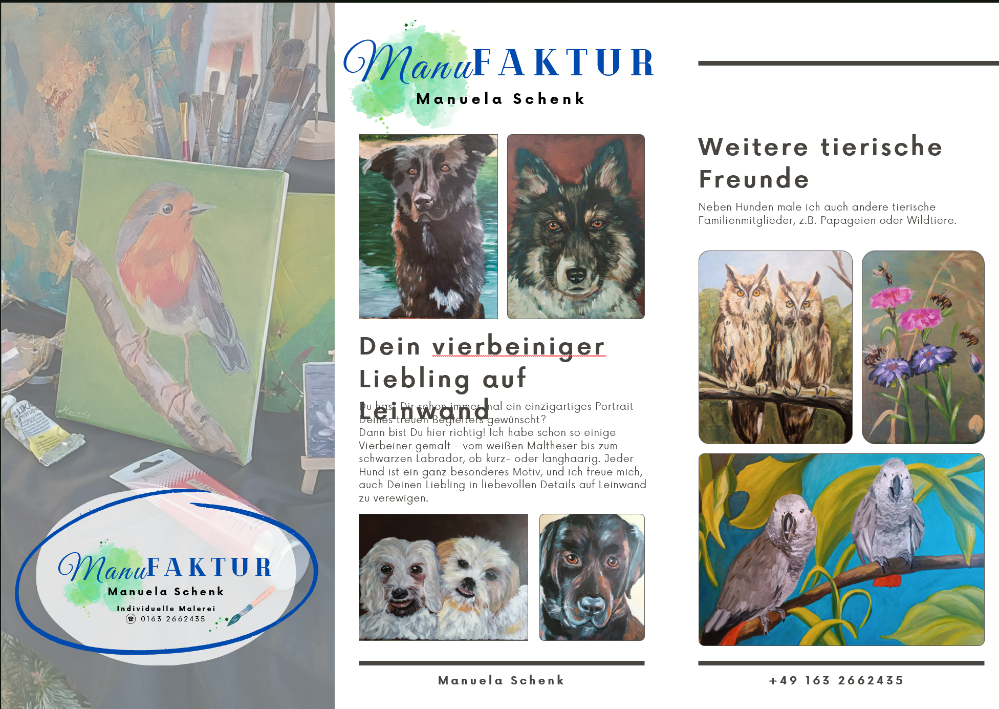
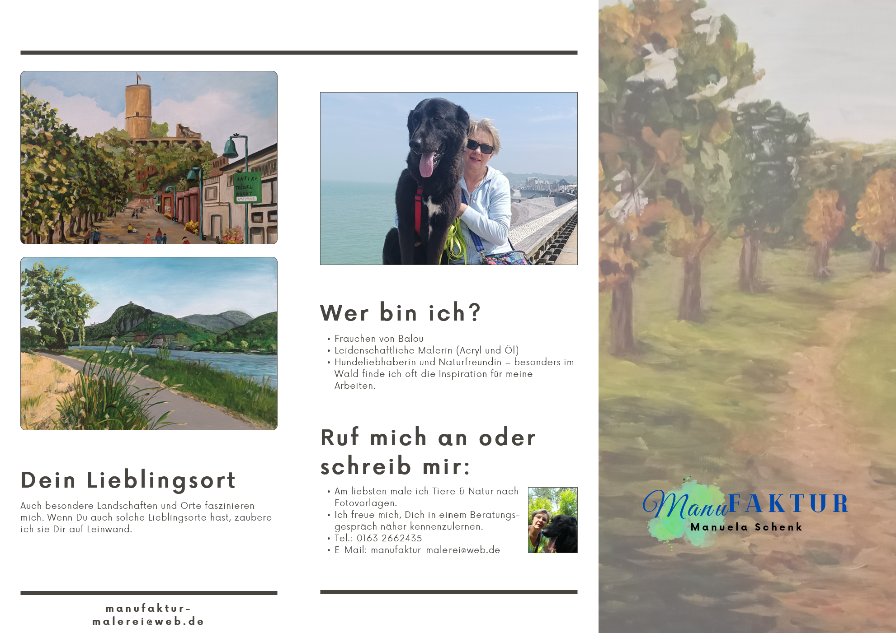

Bildergalerie
Stöbere durch eine Auswahl meiner handgemalten Werke. Klicke auf ein Bild, um es in voller Größe anzusehen.


Mehr erfahren?
Klicke auf eine Seite für die Großansicht des Informationsflyers oder lade das PDF direkt herunter.


Flyer herunterladen (PDF)